Efficient Streaming Language Models with Attention Sinks
基于 Attention Sinks 的高效流式语言模型（StreamingLLM）
简介
LLM 部署到多轮对话等流式场景时面临两大挑战：解码阶段缓存历史 token 的 KV 状态消耗大量内存，且模型无法泛化到超过预训练窗口（如 Llama-2 的 4K）的文本；简单的 window attention 在初始 token 被逐出后性能崩溃。论文发现 attention sink 现象：SoftMax 归一化迫使模型把多余注意力倾倒到对几乎所有后续 token 可见的初始 token 上，因此只需保留 4 个初始 token 的 KV 加上最近 token 的滑动窗口即可稳定注意力分布。由此提出 StreamingLLM，无需任何微调即可让 Llama-2、MPT、Falcon、Pythia 稳定建模 400 万以上 token，相比滑动窗口重算基线最高取得 22.2× 解码加速；并证明预训练时加入专用可学习 sink token 可进一步优化流式部署。对团队而言，这是长时运行 Agent 与多轮对话场景中上下文/KV cache 管理的基础技术，且已被主流推理框架集成，落地成本低。
问题
LLM 在多轮对话等流式应用中部署时，KV cache 内存随序列增长且模型无法处理超过预训练长度的输入；window attention 虽保证恒定内存，但文本长度一旦超过缓存大小（即初始 token 的 KV 被逐出）模型即崩溃；sliding window with re-computation 性能好但复杂度为 O(TL²)，过慢而不实用。论文追问：能否在不牺牲效率与性能的前提下，让 LLM 处理无限长输入流？
方法
论文首先通过注意力可视化揭示 attention sink 现象：SoftMax 要求注意力分数归一化为 1，模型会把不需要的注意力值倾倒到初始 token 上，其重要性来自绝对位置而非语义（用换行符替换初始 token 也能恢复困惑度）。据此提出 StreamingLLM：KV cache 分为两部分——4 个初始 token 作为 attention sink 稳定注意力计算，加上最近 token 的 rolling KV cache；位置编码按缓存内的连续位置而非原文位置分配，兼容 RoPE 与 ALiBi，无需微调。此外提出在预训练时为每个样本前置一个可学习的专用 sink token，使流式部署只需保留该单个 token 即可稳定。
关键结果
StreamingLLM 使 Llama-2-[7,13,70]B、MPT-[7,30]B、Falcon-[7,40]B、Pythia-[2.8,6.9,12]B 稳定建模超过 400 万 token 的文本，困惑度与 sliding window with re-computation 基线相当
相比 sliding window with re-computation 基线，每 token 解码延迟最高 22.2× 加速，内存占用与基线相当
4 个初始 token 作为 attention sink 通常足以恢复流式困惑度，仅加 1-2 个不能完全恢复
流式 QA（拼接 ARC-[Challenge, Easy] 数据集）中 StreamingLLM 与 one-shot 逐样本基线准确率相当；dense attention 出现 OOM，window attention 准确率低
自建 StreamEval 基准上，输入长度接近 120K token 时仍保持合理准确率，而 dense 与 window attention 分别在预训练长度和缓存大小处失效
预训练加入 sink token 的 160M 模型仅用 sink token 即获得稳定流式困惑度，且在 ARC、HellaSwag、LAMBADA 等 7 个 NLP 基准上性能不受损
LongBench 上 4+3496 缓存配置低于截断基线，将 sink 数量增至 1750（1750+1750）后恢复到截断基线水平
增大缓存大小不必然降低困惑度，表明模型可能未充分利用所提供的上下文
创新点
首次系统揭示并命名 attention sink 现象，将其归因于 SoftMax 归一化与自回归训练中初始 token 的全局可见性，并指出该现象也存在于 BERT、ViT 等 Transformer。与 context extension 方法（位置插值+微调）不同，StreamingLLM 不扩展上下文窗口，而是首次将预训练窗口大小与实际生成长度解耦；与 Longformer 等稀疏注意力方法不同，它兼容预训练 dense attention 模型，无需重训练或自定义 GPU kernel，只需保留少量初始 token 的 KV。
团队参考意义
相关度级别：high
命中能力域：3.1 上下文工程与记忆 | 3.5 评测与可靠使用
理由：论文核心是 KV cache/上下文窗口管理与流式生产部署，直接命中 3.1 的'上下文窗口管理与压缩、上下文在生产系统中的管理'；22.2× 解码加速、长流输入下的稳定输出以及 StreamEval 评测设计属于 3.5 的'成本与效率优化、可靠性、评测方法'。团队构建多轮对话、知识库问答与长时运行 Agent 工具时，必然遇到会话或 Agent loop 超过预训练窗口后的输出崩溃与内存膨胀问题，StreamingLLM 提供了无需微调、已被主流推理框架集成的工程化方案；同时其局限（不扩展上下文、无长期记忆）清晰界定了它与 RAG/记忆系统方案的适用边界，有助于团队做上下文策略选型。
建议动作：深入精读并做内部分享
中文全文
arXiv:2309.17453v4 [cs.CL] 2024年4月7日
EFFICIENT STREAMING LANGUAGE MODELS WITH ATTENTION SINKS
Guangxuan Xiao 1 ∗ Yuandong Tian 2 Beidi Chen 3 Song Han 1 , 4 Mike Lewis 2
1 麻省理工学院 2 Meta AI
3 卡内基梅隆大学 4 NVIDIA
https://github.com/mit-han-lab/streaming-llm
ABSTRACT
在多轮对话等需要长时交互的流式应用中部署大语言模型（Large Language Models, LLM）的需求十分迫切，但这带来了两大挑战。首先，在解码阶段，缓存先前 token 的键值状态（Key and Value states, KV）会消耗大量内存。其次，主流 LLM 无法泛化到超过训练序列长度的更长文本。窗口注意力（window attention）——即仅缓存最近的 KV——是一种自然的做法，但我们发现，当文本长度超过缓存大小时，该方法会失效。我们观察到一个有趣的现象，即注意力汇聚（attention sink）：保留初始 token 的 KV 能够大幅恢复窗口注意力的性能。在本文中，我们首先证明，注意力汇聚现象的出现源于初始 token 即使在语义上并不重要，也会获得作为“汇聚点”（sink）的强注意力分数。基于上述分析，我们提出了 StreamingLLM，这是一个高效框架，能够使以有限长度注意力窗口训练的 LLM 在无需任何微调的情况下泛化到无限序列长度。我们表明，StreamingLLM 能够使 Llama-2、MPT、Falcon 和 Pythia 在多达 400 万乃至更多 token 上进行稳定而高效的语言建模。此外，我们发现，在预训练期间添加一个占位 token 作为专用的注意力汇聚点，可以进一步改善流式部署。在流式设置下，StreamingLLM 相比滑动窗口重计算基线可实现高达 22.2 倍的加速。代码和数据集已在链接中提供。
1 INTRODUCTION
大语言模型（Large Language Models, LLMs）（Radford et al., 2018; Brown et al., 2020; Zhang et al., 2022; OpenAI, 2023; Touvron et al., 2023a;b）正变得无处不在，支撑着众多自然语言处理应用，例如对话系统（Schulman et al., 2022; Taori et al., 2023; Chiang et al., 2023）、文档摘要（Goyal & Durrett, 2020; Zhang et al., 2023a）、代码补全（Chen et al., 2021; Rozière et al., 2023）以及问答（Kamalloo et al., 2023）。为了充分释放预训练 LLM 的潜力，它们应当能够高效且准确地执行长序列生成。例如，一个理想的聊天机器人（ChatBot）助手应当能够稳定地处理最近一整天对话的内容。然而，要让 LLM 泛化到比其预训练长度更长的序列是非常具有挑战性的，例如 Llama-2 的 4K（Touvron et al. (2023b)）。
其原因在于，LLM 在预训练期间受到注意力窗口的约束。尽管人们已付出大量努力来扩大这一窗口的大小（Chen et al., 2023; kaiokendev, 2023; Peng et al., 2023），并提升针对长输入的训练（Dao et al., 2022; Dao, 2023）与推理（Pope et al., 2022; Xiao et al., 2023; Anagnostidis et al., 2023; Wang et al., 2021; Zhang et al., 2023b）效率，但可接受的序列长度在本质上仍是有限的，这使得持久化部署无法实现。
在本文中，我们首先引入 LLM 流式应用的概念，并提出如下问题：
我们能否在不牺牲效率和性能的前提下，将 LLM 部署于无限长度的输入？
∗ 部分工作完成于 Meta AI 实习期间。
![Figure 1: Illustration of StreamingLLM vs . existing methods. The language model, pre-trained on texts of length L , predicts the T th token ( T ≫ L ). (a) Dense Attention has O ( T 2 ) time complexity and an increasing cache size. Its performance decreases when the text length exceeds the pre-training text length. (b) Window Attention caches the most recent L tokens' KV. While efficient in inference, performance declines sharply once the starting tokens' keys and values are evicted. (c) Sliding Window with Re-computation rebuilds the KV states from the L recent tokens for each new token. While it performs well on long texts, its O ( TL 2 ) complexity, stemming from quadratic attention in context re-computation, makes it considerably slow. (d) StreamingLLM keeps the attention sink (several initial tokens) for stable attention computation, combined with the recent tokens. It's efficient and offers stable performance on extended texts. Perplexities are measured using the Llama-2-13B model on the first book (65K tokens) in the PG-19 test set.](assets/a534/figures/fig_1.png)
当将 LLM 应用于无限输入流时，会出现两个主要挑战：
一种直观的方法是所谓的窗口注意力（window attention）（Beltagy et al., 2020）（图 1 b），它仅在最近 token 的 KV 状态上维护一个固定大小的滑动窗口。尽管在缓存初次填满之后，它能保证恒定的内存占用和解码速度，但一旦序列长度超过缓存大小，模型就会崩溃，也就是说，即使仅仅逐出第一个 token 的 KV 也会如此，如图 3 所示。另一种策略是带重计算的滑动窗口（如图 1 c 所示），它为每个生成的 token 重建最近 token 的 KV 状态。虽然这种方法性能强劲，但由于需要在其窗口内进行二次方复杂度的注意力计算，其速度显著变慢，使得该方法对于真实世界的流式应用而言并不实用。
为了理解窗口注意力失效的原因，我们发现自回归大语言模型（LLM）存在一个有趣的现象：无论初始 token 与语言建模任务是否相关，都会有数量惊人的注意力分数被分配给这些初始 token，如图 2 所示。我们将这些 token 称为“注意力汇聚点（attention sinks）”。尽管它们缺乏语义上的重要性，却收集了大量注意力分数。我们将原因归结于 Softmax 操作：该操作要求所有上下文 token 的注意力分数之和为一。因此，即使当前查询（query）在许多先前的 token 中没有强匹配，模型仍需将这些多余的注意力值分配到某处，以使总和为一。初始 token 充当汇聚 token 的原因很直观：由于自回归语言建模的特性，初始 token 几乎对所有后续 token 可见，因此更容易被训练为注意力汇聚点。
基于上述洞察，我们提出了 StreamingLLM——一个简单而高效的框架，使以有限注意力窗口训练的大语言模型无需微调即可处理无限长度的文本。StreamingLLM 利用了注意力汇聚点具有较高注意力值这一事实：保留它们可以使注意力分数分布保持接近正常。因此，StreamingLLM 只需保留注意力汇聚 token 的 KV（仅需 4 个初始 token 即可满足），连同滑动窗口的 KV，以锚定注意力计算并稳定模型性能。借助 StreamingLLM，包括 Llama-2-[7, 13, 70]B、MPT-[7, 30]B、Falcon-[7, 40]B 和 Pythia[2.9,6.9,12]B 在内的模型能够可靠地对 400 万个 token 进行建模，甚至可能更多。与唯一可行的基线——滑动窗口重计算——相比，StreamingLLM 实现了高达 22.2 倍的加速，实现了大语言模型的流式使用。
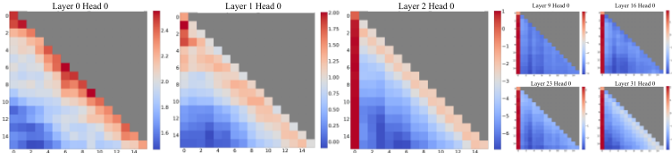
此外，我们验证了注意力汇聚点假设，并证明可以通过预训练使语言模型在流式部署时只需一个注意力汇聚 token。具体而言，我们建议在所有训练样本的开头添加一个额外的可学习 token，作为指定的注意力汇聚点。通过从头预训练 1.6 亿参数的语言模型，我们证明添加这个单一的汇聚 token 能够在流式场景下保持模型性能。这与原始模型形成对比：后者需要重新引入多个初始 token 作为注意力汇聚点，才能达到相同的性能水平。
最后，我们强调，StreamingLLM 能够高效地利用 KV 缓存中的 token 生成连贯文本，而无需扩展大语言模型的上下文长度。它以最小的内存占用和对过去数据的依赖，满足持续运行的需求。此外，StreamingLLM 还可以与上下文扩展方法互补，以增加可关注的近期上下文。
2 RELATED WORK
关于将大语言模型（LLM）应用于长文本的研究已十分广泛，主要聚焦于三个方向：长度外推（Length Extrapolation）、上下文窗口扩展（Context Window Extension），以及提升大语言模型对长文本的利用能力（Improving LLMs' Utilization of Long Text）。尽管这些方向看似相关，但值得注意的是，其中一个方向的进展并不必然带来另一个方向的进展。例如，扩展大语言模型的上下文长度并不能提升模型在超出该上下文长度之外的性能，而这两种方法都无法确保对长上下文的有效利用。我们的 StreamingLLM 框架主要属于第一类，即将大语言模型应用于显著超出预训练窗口大小的文本，甚至可能是无限长度的文本。我们既不扩展大语言模型的注意力窗口大小，也不增强模型对长文本的记忆与利用能力。后两类方向与我们的关注点正交，可以与我们的技术相结合。
长度外推旨在使在较短文本上训练的语言模型在测试时能够处理更长的文本。一个主流的研究方向是为 Transformer 模型开发相对位置编码方法，使其能够在训练窗口之外正常工作。其中一项工作是旋转位置编码（Rotary Position Embeddings, RoPE）（Su et al., 2021），它对每个注意力层中的查询（query）和键（key）进行变换，以融入相对位置信息。尽管前景可观，但后续研究（Press et al., 2022; Chen et al., 2023）表明，其在超出训练窗口的文本上表现不佳。另一种方法是 ALiBi（Press et al., 2022），它根据查询与键之间的距离对注意力分数施加偏置，从而引入相对位置信息。虽然这种方法表现出更好的外推能力，但我们在 MPT 模型上的测试表明，当文本长度远大于训练长度时，模型会出现崩溃。然而，现有方法尚未实现无限长度外推，因此目前没有任何大语言模型适用于流式应用。
上下文窗口扩展（Context Window Extension）的核心在于扩大大语言模型（LLM）的上下文窗口，使其能够在一次前向传播中处理更多 token。其中一条主要的研究路线致力于解决训练效率问题。鉴于训练过程中计算的二次方复杂度备受关注，开发长上下文 LLM 既是计算挑战也是内存挑战。已有的解决方案涵盖多个方向：从以系统为中心的优化（如 FlashAttention (Dao et al., 2022; Dao, 2023)，它可加速注意力计算并降低内存占用），到以模型质量换取效率的近似注意力方法 (Zaheer et al., 2020b; Beltagy et al., 2020; Wang et al., 2020; Kitaev et al., 2020)。最近，涌现出大量扩展基于 RoPE 的预训练 LLM 的工作 (Chen et al., 2023; kaiokendev, 2023; bloc97, 2023; Peng et al., 2023)，涉及位置插值与微调。然而，上述所有技术都只能将 LLM 的上下文窗口扩展到有限程度，无法满足本文的核心关注点——处理无限输入。
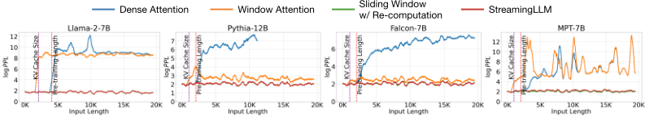
![Dense Attention Window Attention StreamingLLM Figure 3: Language modeling perplexity on texts with 20K tokens across various LLM. Observations reveal consistent trends: (1) Dense attention fails once the input length surpasses the pre-training attention window size. (2) Window attention collapses once the input length exceeds the cache size, i.e., the initial tokens are evicted. (3) StreamingLLM demonstrates stable performance, with its perplexity nearly matching that of the sliding window with re-computation baseline. 0.6](assets/a534/figures/fig_4.png)
3.1 THE FAILURE OF WINDOW ATTENTION AND ATTENTION SINKS
While the window attention technique offers efficiency during inference, it results in an exceedingly high language modeling perplexity. Consequently, the model's performance is unsuitable for deployment in streaming applications. In this section, we use the concept of attention sink to explain the failure of window attention, serving as the inspiration behind StreamingLLM.
Identifying the Point of Perplexity Surge. Figure 3 shows the perplexity of language modeling on a 20K token text. It is evident that perplexity spikes when the text length surpasses the cache size, led by the exclusion of initial tokens. This suggests that the initial tokens, regardless of their distance from the predicted tokens, are crucial for maintaining the stability of LLMs.
Why do LLMs break when removing initial tokens' KV? We visualize attention maps from all layers and heads of the Llama-2-7B and models in Figure 2. We find that, beyond the bottom two layers, the model consistently focuses on the initial tokens across all layers and heads. The implication is clear: removing these initial tokens' KV will remove a considerable portion of the denominator in the SoftMax function (Equation 1) in attention computation. This alteration leads to a significant shift in the distribution of attention scores away from what would be expected in normal inference settings.
There are two possible explanations for the importance of the initial tokens in language modeling: (1) Either their semantics are crucial, or (2) the model learns a bias towards their absolute position. To distinguish between these possibilities, we conduct experiments (Table 1), wherein the first four tokens are substituted with the linebreak token '\n". The observations indicate that the model still significantly emphasizes these initial linebreak tokens. Furthermore, reintroducing them restores the language modeling perplexity to levels comparable to having the original initial tokens. This suggests that the absolute position of the starting tokens, rather than their semantic value, holds greater significance.
LLMs attend to Initial Tokens as Attention Sinks. To explain why the model disproportionately focuses on initial tokens-regardless of their semantic relevance to language modeling, we introduce the concept of ' attention sink ". The nature of the SoftMax function (Equation 1) prevents all attended tokens from having zero values. This requires aggregating some information from other tokens across all heads in all layers, even if the current embedding has sufficient self-contained information for its prediction. Consequently, the model tends to dump unnecessary attention values to specific tokens. A similar observation has been made in the realm of quantization outliers (Xiao et al., 2023; Bondarenko et al., 2023), leading to the proposal of SoftMax-Off-by-One (Miller, 2023) as a potential remedy.
| 0 | 1 |
|---|---|
| Llama-2-13B | PPL ( ↓ ) |
| 0 + 1024 (Window) 5158.07 | 0 + 1024 (Window) 5158.07 |
| 4 + 1020 | 5.40 |
| 4"\n"+1020 | 5.60 |
| 0 | 1 |
| 0 | 1 | 2 | 3 | 4 | 5 |
|---|---|---|---|---|---|
| Cache Config | 0+2048 | 1+2047 | 2+2046 | 4+2044 | 8+2040 |
| Falcon-7B | 17.90 | 12.12 | 12.12 | 12.12 | 12.12 |
| MPT-7B | 460.29 | 14.99 | 15.00 | 14.99 | 14.98 |
| Pythia-12B | 21.62 | 11.95 | 12.09 | 12.09 | 12.02 |
| Cache Config | 0+4096 | 1+4095 | 2+4094 | 4+4092 | 8+4088 |
| Llama-2-7B | 3359.95 | 11.88 | 10.51 | 9.59 | 9.54 |
| 0 | 1 | 2 | 3 | 4 | 5 |
Why do various autoregressive LLMs, such as Llama-2, MPT, Falcon, and Pythia, consistently focus on initial tokens as their attention sinks, rather than other tokens? Our explanation is straightforward: Due to the sequential nature of autoregressive language modeling, initial tokens are visible to all subsequent tokens, while later tokens are only visible to a limited set of subsequent tokens. As a result, initial tokens are more easily trained to serve as attention sinks, capturing unnecessary attention.
We've noted that LLMs are typically trained to utilize multiple initial tokens as attention sinks rather than just one. As illustrated in Figure 2, the introduction of four initial tokens, as attention sinks, suffices to restore the LLM's performance. In contrast, adding just one or two doesn't achieve full recovery. We believe this pattern emerges because these models didn't include a consistent starting token across all input samples during pre-training. Although Llama-2 does prefix each paragraph with a '<s>" token, it's applied before text chunking, resulting in a mostly random token occupying the zeroth position. This lack of a uniform starting token leads the model to use several initial tokens as attention sinks. We hypothesize that by incorporating a stable learnable token at the start of all training samples, it could singularly act as a committed attention sink, eliminating the need for multiple initial tokens to ensure consistent streaming. We will validate this hypothesis in Section 3.3.
3.2 ROLLING KV CACHE WITH ATTENTION SINKS
为了在已经训练好的大语言模型（LLM）中实现流式处理，我们提出了一种简单直接的方法，无需对模型进行任何微调即可恢复窗口注意力的困惑度。除了当前滑动窗口内的 token 之外，我们还在注意力计算中重新引入了若干起始 token 的键值（KV）。
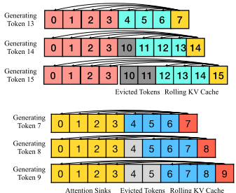
如图 4 所示，StreamingLLM 中的 KV 缓存在概念上可以分为两部分：（1）注意力汇聚点（attention sinks，即四个初始 token）用于稳定注意力计算；（2）滚动 KV 缓存（Rolling KV Cache）保留最近的 token，这对语言建模至关重要。StreamingLLM 的设计具有很好的通用性，可以无缝融入任何采用相对位置编码的自回归语言模型，例如 RoPE（Su et al., 2021）和 ALiBi（Press et al., 2022）。
在确定相对距离并为 token 添加位置信息时，StreamingLLM 关注的是缓存内的位置，而非原始文本中的位置。这一区别对 StreamingLLM 的性能至关重要。例如，若当前缓存（图 4）中包含 token [0, 1, 2, 3, 6, 7, 8]，并且正在解码第 9 个 token，那么所分配的位置是 [0, 1, 2, 3, 4, 5, 6, 7]，而不是原始文本中的位置，后者应为 [0, 1, 2, 3, 6, 7, 8, 9]。
对于 RoPE 这类编码，我们在引入旋转变换之前先缓存 token 的 Key，然后在每个解码阶段对滚动缓存中的 key 应用位置变换。另一方面，与 ALiBi 的集成则更为直接。此时，对注意力分数施加的是连续的线性偏置，而非“跳跃”偏置。这种在缓存内分配位置嵌入的方法对 StreamingLLM 的功能至关重要，可确保模型即使在超出其预训练注意力窗口大小的情况下也能高效运行。
3.3 PRE-TRAINING LLMS WITH ATTENTION SINKS
如第 3.1 节所详述，模型对多个初始 token 产生过度关注的一个重要原因，在于缺少一个专门用于分流过多注意力分数的指定汇聚 token（sink token）。正因如此，模型会在无意中将全局可见的 token（主要是初始 token）用作注意力汇聚点（attention sink）。一种可能的补救措施是有意引入一个全局可训练的注意力汇聚 token，记为“Sink Token”，让它充当多余注意力分数的存储库。另一种做法是将常规的 SoftMax 函数替换为诸如 SoftMax-off-by-One（Miller, 2023）之类的变体，
| 0 | 1 | 2 | 3 | 4 |
|---|---|---|---|---|
| Cache Config | 0+1024 | 1+1023 | 2+1022 | 4+1020 |
| Vanilla | 27.87 | 18.49 | 18.05 | 18.05 |
| Zero Sink | 29214 | 19.90 | 18.27 | 18.01 |
| Learnable Sink | 1235 | 18.01 | 18.01 | 18.02 |
| 0 | 1 | 2 | 3 | 4 |
该变体不要求所有上下文 token 上的注意力分数之和为一，因而也可能有效。值得注意的是，SoftMax 1 等价于在注意力计算中前置一个 Key 和 Value 特征全为零的 token。为契合我们的框架，我们将该方法记为“Zero Sink”。
为进行验证，我们在完全相同的设置下从零开始预训练三个具有 1.6 亿参数的语言模型。第一个模型采用标准 SoftMax 注意力（Vanilla），第二个模型用 SoftMax 1（Zero Sink）替换了常规注意力机制，第三个模型则在所有训练样本中前置一个可学习的占位 token（Sink Token）。如表 3 所示，尽管 zero sink 在一定程度上缓解了注意力汇聚点问题，模型仍会依赖其他初始 token 作为注意力汇聚点。引入汇聚 token 对于稳定注意力机制非常有效。只需将该汇聚 token 与最近的 token 配对，便足以锚定模型的性能，且所得的评估困惑度甚至略有改善。基于这些发现，我们建议在未来训练大语言模型（LLM）时，让所有样本都包含汇聚 token，以优化流式部署。
4 EXPERIMENTS
我们使用四个近期知名的模型系列来评估 StreamingLLM：Llama-2（Touvron et al., 2023b）、MPT（Team, 2023）、PyThia（Biderman et al., 2023）和 Falcon（Almazrouei et al., 2023）。值得注意的是，Llama-2、Falcon 和 Pythia 采用了 RoPE（Su et al., 2021），而 MPT 则采用 ALiBi（Press et al., 2022）——这两者是近期研究中最具影响力的位置编码技术。我们多样化的模型选择确保了研究结论的有效性与稳健性。我们将 StreamingLLM 与若干已有基线进行基准测试对比，包括稠密注意力、窗口注意力以及带重计算的滑动窗口方法。在后续所有涉及 StreamingLLM 的实验中，除非另有说明，我们默认使用四个初始 token 作为注意力汇聚点。
4.1 LANGUAGE MODELING ON LONG TEXTS ACROSS LLM FAMILIES AND SCALES
我们首先使用拼接而成的 PG19（Rae et al., 2020）测试集评估 StreamingLLM 的语言建模困惑度，该测试集包含 100 本长篇书籍。对于 Llama-2 模型，缓存大小设为 2048；而对于 Falcon、Pythia 和 MPT 模型，缓存大小设为 1024。该大小为预训练窗口尺寸的一半，如此选择是为了增强可视化的清晰度。
图 3 表明，在长度达 20K token 的文本上，StreamingLLM 在困惑度方面能够与 oracle 基线（带重计算的滑动窗口）相媲美。与此同时，当输入长度超过其预训练窗口时，稠密注意力方法会失效；而当输入长度超过缓存大小时，窗口注意力方法也会陷入困境，导致初始 token 被逐出。在图 5 中，我们进一步证实，StreamingLLM 能够可靠地处理极长的文本——涵盖超过 400 万个 token——并适用于多种模型家族与规模，包括 Llama-2-[7,13,70]B、Falcon-[7,40]B、Pythia-[2.8,6.9,12]B 以及 MPT-[7,30]B。
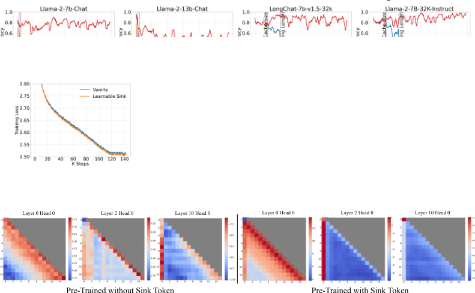
未使用汇聚 token 预训练 使用汇聚 token 预训练
4.2 RESULTS OF PRE-TRAINING WITH A SINK TOKEN
为验证我们的设想，即在所有预训练样本中引入汇聚 token 能够改进流式大语言模型（LLM），我们在完全相同的条件下训练了两个语言模型，每个模型具有 1.6 亿参数。其中一个模型遵循原始训练设置，另一个模型则在每个训练样本的开头加入一个汇聚 token。我们的实验采用 Pythia-160M (Biderman et al., 2023) 代码库，并遵循其训练方案。我们在一台 8xA6000 NVIDIA GPU 服务器上，使用去重后的 Pile (Gao et al., 2020) 数据集对模型进行训练。除了将训练批大小（batch size）降至 256 之外，我们保留了所有 Pythia 训练配置，包括学习率调度、模型初始化和数据集排列。两个模型均训练了 143,000 步。
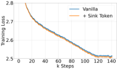
| Methods | ARC-c | ARC-e | HS | LBD | OBQA | PIQA | WG |
|---|---|---|---|---|---|---|---|
| Vanilla | 18.6 | 45.2 | 29.4 | 39.6 | 16 | 62.2 | 50.1 |
| +Sink Token | 19.6 | 45.6 | 29.8 | 39.9 | 16.6 | 62.6 | 50.8 |
| Methods | ARC-c | ARC-e | HS | LBD | OBQA | PIQA | WG |
收敛性与常规模型性能。在预训练期间加入汇聚 token 对模型收敛性以及其后在一系列 NLP 基准测试上的性能没有负面影响。如图 6 所示，使用汇聚 token 训练的模型与其原始（vanilla）对应模型相比，表现出相似的收敛动态。我们在七个多样化的 NLP 基准测试上评估这两个模型，包括 ARC-[Challenge, Easy] (Clark et al., 2018)、HellaSwag (Zellers et al., 2019)、LAMBADA (Paperno et al., 2016)、OpenbookQA (Mihaylov et al., 2018)、PIQA (Bisk et al., 2020) 和 Winogrande (Sakaguchi et al., 2019)。如表 4 所示，使用汇聚 token 预训练的模型与采用 vanilla 方法训练的模型表现相近。
流式性能。如表 3 所示，采用传统方法训练的模型与引入汇聚 token 的模型在流式困惑度（perplexity）上有所不同。值得注意的是，vanilla 模型需要额外添加多个 token 作为注意力汇聚（attention sinks），才能保持稳定的流式困惑度。相比之下，采用汇聚 token 训练的模型仅凭该汇聚 token 即可取得令人满意的流式性能。
（OOM）错误。窗口注意力（window attention）的准确率较差。StreamingLLM 的结果与 one-shot 逐样本（sample-by-sample）基线相当。窗口注意力和 StreamingLLM 使用的缓存大小均为 1024。
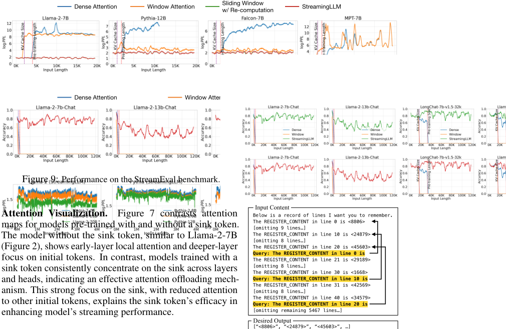
4.3 RESULTS ON STREAMING QUESTION ANSWERING WITH INSTRUCTION-TUNED MODELS
To show StreamingLLM's real-world applicability, we emulate multi-round question-answering using instruction-tuned LLMs, commonly used in real-world scenarios.
We first concatenate all question-answer pairs from the ARC-[Challenge, Easy] datasets, feed the continuous stream to Llama-2-[7,13,70]B-Chat models, and assess model completions at each answer position using an exact match criterion. As table 5 indicates, dense attention results in Out-of-Memory (OOM) errors, showing it unsuitable for this setting. While the window attention method works efficiently, it exhibits low accuracy due to random outputs when the input length exceeds the cache size. Conversely, StreamingLLM excels by efficiently handling the streaming format, aligning with the one-shot, sample-by-sample baseline accuracy.
Highlighting a more fitting scenario for StreamingLLM, we introduce a dataset, StreamEval, inspired by the LongEval (Li et al., 2023) benchmark. As depicted in Figure 8, diverging from LongEval's single query over a long-span setup, we query the model every 10 lines of new information. Each query's answer is consistently 20 lines prior, reflecting real-world instances where questions typically pertain to recent information. As illustrated in Figure 9, LLMs employing StreamingLLM maintain reasonable accuracy even as input lengths approach 120K tokens. In contrast, both dense and window attention fail at the pre-training text length and the KV cache size, respectively. Additionally, we utilize two context-extended models, LongChat-7b-v1.5-32k (Li et al., 2023) and Llama-2-7B-32KInstruct (Together, 2023), to show that StreamingLLM can complement context extension techniques. Within StreamingLLM, context extension means broadening the maximum cache size of streaming LLMs, enabling the capture of broader local information.
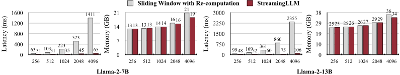
4.4 ABLATION STUDIES
Numbers of Initial Tokens. In Table 2, we ablate the effect of adding varying numbers of initial tokens with recent tokens on the streaming perplexity. The results show the insufficiency of introducing merely one or two initial tokens, whereas a threshold of four initial tokens appears enough, with subsequent additions contributing marginal effects. This result justifies our choice of introducing 4 initial tokens as attention sinks in StreamingLLM.
Cache Sizes. In Table 6, we evaluate cache size's impact on StreamingLLM's perplexity. Contrary to intuition, increasing the cache size doesn't consistently lower the language modeling perplexity. This inconsistency shows a potential limitation where these models might not maximize the utility of the entire context they receive. Future research efforts should target enhancing these models' capabilities to utilize extensive contexts better.
4.5 EFFICENCY RESULTS
我们将 StreamingLLM 的解码延迟和内存占用与带重计算的滑动窗口进行了基准测试对比，后者是唯一具有可接受质量的基线方法。两种方法均基于 Huggingface Transformers 库（Wolf et al., 2020）实现，并在单块 NVIDIA A6000 GPU 上使用 Llama-2-7B 和 Llama-2-13B 模型进行测试。如图 10 所示，随着缓存大小的增加，StreamingLLM 的解码速度呈线性增长。带重计算的滑动窗口基线的解码延迟则呈二次方上升。因此，StreamingLLM 实现了令人瞩目的加速，每个 token 的加速比最高可达 22.2×。尽管延迟有所降低，StreamingLLM 的内存占用仍与重计算基线保持一致。
5 CONCLUSION
在流式应用中部署大语言模型（LLM）的需求十分迫切，但由于效率限制以及处理较长文本时性能下降，这一部署面临诸多挑战。窗口注意力（window attention）提供了一种部分解决方案，但当初始 token 被排除在外时，其性能会急剧下降。认识到这些 token 充当“注意力汇聚点”（attention sinks）的作用后，我们提出了 StreamingLLM——一个简单而高效的框架，使 LLM 无需微调即可处理无限长度的文本。通过将注意力汇聚点与近期 token 相结合，StreamingLLM 能够高效地对多达 400 万 token 的文本进行建模。我们进一步表明，使用专用的 sink token 对模型进行预训练可以提升流式性能。StreamingLLM 首次将 LLM 的预训练窗口大小与其实际文本生成长度解耦，为 LLM 的流式部署铺平了道路。
表 6：缓存大小对 StreamingLLM 性能的影响。在 StreamingLLM 中增大缓存大小并不总能带来困惑度的下降，这表明这些模型可能无法充分利用所提供的上下文。缓存配置 x + y 表示添加 x 个初始 token 和 y 个近期 token。困惑度在拼接后的 PG19 测试集的 400K 个 token 上进行评估。
| Cache | 4+252 | 4+508 | 4+1020 | 4+2044 |
|---|---|---|---|---|
| Falcon-7B | 13.61 | 12.84 | 12.34 | 12.84 |
| MPT-7B | 14.12 | 14.25 | 14.33 | 14.99 |
| Pythia-12B | 13.17 | 12.52 | 12.08 | 12.09 |
| Cache | 4+508 | 4+1020 | 4+2044 | 4+4092 |
| Llama-2-7B | 9.73 | 9.32 | 9.08 | 9.59 |
| Cache | 4+252 | 4+508 | 4+1020 | 4+2044 |
REPRODUCIBILITY STATEMENT
本文提出的所有研究结果均可复现。我们已在本 github 仓库中公开了我们的代码和数据集。本文使用的模型均为公开可用，我们提供了获取这些模型的参考链接。有关我们实验的详细信息，包括超参数、训练协议和评估方法，可在实验部分（第 4 节）中找到。我们相信，借助所提供的资源，读者能够完整复现我们呈现的全部结果。
IMPACT STATEMENT
StreamingLLM 已被多种大语言模型（LLM）服务解决方案广泛采用，其中包括 NVIDIA TensorRT-LLM、Intel Extension for Transformers、HuggingFace Transformers、MLC LLM 等。
A DISCUSSIONS
应用。StreamingLLM 特别适用于流式应用，例如多轮对话，这类场景中无需重度依赖大量记忆或历史数据即可持续运行至关重要。例如，在基于 LLM 的日常助手应用中，StreamingLLM 使模型能够在长时间内无缝运行。它基于最近的交互来生成回复，从而避免了频繁刷新缓存的需要。传统方法在对话长度超过训练长度时可能需要重置缓存，导致近期上下文的丢失，或者需要从最近的文本历史中重新计算键值（KV）状态，这可能效率低下。
局限性。虽然 StreamingLLM 提升了 LLM 在流式场景下的效率，但它并未扩展模型的上下文窗口，也未增强其长期记忆能力。如第 C 节所述，模型只能在当前缓存的范围内运行。因此，StreamingLLM 不适合需要长期记忆和大量数据依赖的任务，例如长文档问答（QA）和摘要生成。然而，它在仅需短期记忆的场景中表现出色，例如日常对话和短文档问答，其优势在于能够基于近期上下文生成连贯文本，而无需刷新缓存。
更广泛的社会影响。StreamingLLM 显著提升了 LLM 的效率和可及性，使其在各行各业的使用更加普及。通过在对话式 Agent 等应用中实现不间断的快速交互，StreamingLLM 改善了用户体验，尤其是在需要固定长度模型的场景中。这一进步使得对话更加流畅且具备上下文感知能力，有望惠及教育、医疗和客户服务等领域。此外，StreamingLLM 的高效处理降低了计算负载，符合对环境可持续 AI 技术的需求。这一方面对于在技术资源有限的地区推广先进 AI 工具至关重要。然而，StreamingLLM 的潜在负面影响与一般语言模型类似，例如错误信息和有偏见内容生成的风险。必须通过健全的伦理准则和保障措施来应对这些风险。总之，虽然 StreamingLLM 存在语言模型共有的一些风险，但它在提升用户体验、普及 AI 使用和促进可持续性方面的积极贡献值得关注。这些益处凸显了负责任地部署和合乎伦理地使用这项技术的重要性。
B ADDITIONAL RELATED WORKS
Sparse Transformers。关于高效 Transformer 模型的文献主要聚焦于降低自注意力机制的计算与内存复杂度。一条相关的研究路线是通过将注意力矩阵的视野限制在固定的、预定义的模式（例如局部窗口或具有固定步长的块模式）来稀疏化注意力矩阵（Tay et al., 2022）。Sparse Transformer（Child et al., 2019）引入了注意力矩阵的稀疏分解，将注意力的计算复杂度降低到 O ( n √ n )。LongFormer（Beltagy et al., 2020）将膨胀的局部窗口注意力与面向任务的全局注意力相结合。Extended Transformer Construction（ETC）Ainslie et al.（2020）提出了一种新颖的全局-局部注意力机制，包含四种注意力模式：全局到全局、局部到局部、局部到全局以及全局到局部。在 ETC 的基础上，BigBird（Zaheer et al., 2020a）提出了另一种具有线性复杂度的注意力替代方案，利用全局 token、局部滑动窗口注意力以及随机注意力。然而，这些方法存在若干局限。首先，Sparse Transformer 和 ETC 需要针对矩阵-矩阵乘法的一种特定块稀疏变体定制 GPU 内核。其次，LongFormer、ETC 和 BigBird 都依赖全局注意力模式，而这不适用于自回归语言模型。第三，这些方法与预训练模型不兼容，需要从头重新训练。相比之下，我们的方法易于实现，使用标准 GPU 内核，并且与自然语言处理（NLP）社区中普遍采用的稠密注意力的预训练自回归语言模型兼容。这种兼容性带来了显著优势，使得无需任何微调即可利用现有的预训练模型。
同期工作。我们的研究与 Han 等人的工作同期开展，后者对语言模型的长度泛化失败进行了理论研究，识别出三个分布外（out-of-distribution）因素。受这一分析启发，他们的方法采用"Λ"形注意力模式并重新配置位置编码距离，以增强大语言模型（LLM）的长度泛化能力。该方法与我们的方法论有相似之处。然而，我们的工作揭示了“注意力汇聚点（attention sink）”现象，即 Transformer 模型倾向于将很高的注意力分数分配给语义很小的初始 token。这一现象超出了长度泛化失败的范畴，表明 Transformer 模型中存在一个更为普遍的问题。我们不仅在自回归语言模型中观察到这种“注意力汇聚点”行为，还在诸如 BERT 的编码器 Transformer（见第 H 节）以及视觉 Transformer（Vision Transformers, ViTs）（Darcet et al., 2023）中观察到该行为，这表明该现象在 Transformer 架构中更为普遍地存在。为缓解“注意力汇聚点”现象，我们提出在预训练期间引入一个可学习的汇聚 token（sink token），并通过大量消融实验来支持我们的发现。
| Llama-2-7B-32K-Instruct.Line Distances | Llama-2-7B-32K-Instruct.Token Distances | Cache Config.4+2044 | Cache Config.4+4092 | Cache Config.4+8188 | Cache Config.4+16380 |
|---|---|---|---|---|---|
| 20 | 460 | 85.8 | 84.6 | 81.15 | 77.65 |
| 40 | 920 | 80.35 | 83.8 | 81.25 | 77.5 |
| 60 | 1380 | 79.15 | 82.8 | 81.5 | 78.5 |
| 80 | 1840 | 75.3 | 77.15 | 76.4 | 73.8 |
| 100 | 2300 | 0 | 61.6 | 50.1 | 40.5 |
| 150 | 3450 | 0 | 68.2 | 58.3 | 38.45 |
| 200 | 4600 | 0 | 0 | 62.75 | 46.9 |
| 400 | 9200 | 0 | 0 | 0 | 45.7 |
| 600 | 13800 | 0 | 0 | 0 | 28.5 |
| 800 | 18400 | 0 | 0 | 0 | 0 |
| 1000 | 23000 | 0 | 0 | 0 | 0 |
| Llama-2-7B-32K-Instruct.Line Distances | Llama-2-7B-32K-Instruct.Token Distances | Cache Config.4+2044 | Cache Config.4+4092 | Cache Config.4+8188 | Cache Config.4+16380 |
与此同时，Darcet 等人观察到视觉 Transformer 中类似的注意力集中于随机背景 patch token 的现象，并将其称为“寄存器（register）”。这些寄存器充当全局图像信息的存储库。他们的解决方案是添加专用的“寄存器” token，旨在平衡注意力分布。我们发现的“注意力汇聚点”与这一概念相呼应。在我们的论文中，“注意力汇聚点”是指不成比例地吸引后续 token 注意力的初始 token。在预训练期间引入专用的汇聚 token 可以防止模型不适当地将内容 token 用作注意力汇聚点，从而实现更有效的注意力分布。然而，二者存在一个关键区别：视觉 Transformer 中的“寄存器”在中间层内充当全局信息的载体，而我们的“注意力汇聚点”则被置于自回归模型中的初始 token 位置。这种位置上的差异表明，注意力计算中的 softmax 函数可能在注意力汇聚点的产生过程中扮演更为根本的角色。
C ACCURACY ON STREAMEVAL WITH INCREASING QUERY-ANSWER LINE DISTANCE
为了评估 StreamingLLM 对扩展输入的处理能力，我们在 StreamEval 上对 Llama-2-7B-32K-Instruct 模型进行了评估，重点关注各种缓存配置下不同的查询-答案行距离。在 StreamEval 中，每行由 23 个 token 组成，因此行距离等价于 23 × 行距离的 token 距离。准确率通过在 100 个样本上对结果取平均来计算，每个样本包含 100 个查询。表 7 表明，当查询与答案之间的 token 距离在缓存大小范围内时，StreamingLLM 能够保持准确率。然而，随着该距离的增大，准确率逐渐下降，并在超过缓存容量时最终降为零。
这些结果表明，虽然 StreamingLLM 能够基于近期上下文有效地生成连贯文本，但它无法扩展语言模型的上下文长度。这些结果还凸显了当前语言模型面临的一个更广泛的挑战：它们无法充分利用缓存内的上下文信息，这一发现与 Liu 等人的观察结果一致。
| Llama2-7B-chat.Llama2-7B-chat | Single-Document QA.NarrativeQA | Single-Document QA.Qasper | Multi-Document QA.HotpotQA | Multi-Document QA.2WikiMQA | Summarization.GovReport | Summarization.MultiNews |
|---|---|---|---|---|---|---|
| Truncation 1750+1750 | 18.7 | 19.2 | 25.4 | 32.8 | 27.3 | 25.8 |
| StreamingLLM 4+3496 | 11.6 | 16.9 | 21.6 | 28.2 | 23.9 | 25.5 |
| StreamingLLM 1750+1750 | 18.2 | 19.7 | 24.9 | 32 | 26.3 | 25.9 |
| Llama2-7B-chat.Llama2-7B-chat | Single-Document QA.NarrativeQA | Single-Document QA.Qasper | Multi-Document QA.HotpotQA | Multi-Document QA.2WikiMQA | Summarization.GovReport | Summarization.MultiNews |
D LONG-RANGE BENCHMARK EVALUATION
我们使用 Llama-2-7B-chat 模型（最大上下文长度为 4k）在 LongBench（Bai et al., 2023）上对 StreamingLLM 进行了评估，该基准测试涵盖三类关键的自然语言处理（NLP）任务：单文档问答（NarrativeQA (Koˇ ciský et al., 2017) 和 Qasper (Dasigi et al., 2021)）、多文档问答（HotpotQA (Yang et al., 2018) 和 2WikiMQA Ho et al. (2020)）以及摘要生成（GovReport (Huang et al., 2021)、MultiNews (Fabbri et al., 2019)）。LongBench 为 Llama-2-7B-chat 模型设定了默认的最大序列长度 3,500 个 token，并从中间进行截断以保留开头和结尾的信息（各 1,750 个 token）。表 8 显示，采用 4+3496 缓存配置的 StreamingLLM 表现不及截断基线，这可能是由于丢失了关键的初始输入提示信息。然而，将注意力汇聚（attention sink）数量对齐至 1750 后，性能可恢复至文本截断基线的水平。这些结果印证了第 C 节中的发现，表明 StreamingLLM 的有效性取决于其缓存内的信息，其缓存内性能与文本截断基线相当。
E LLAMA-2-7B ATTENTION VISUALIZATION ON LONGER SEQUENCES
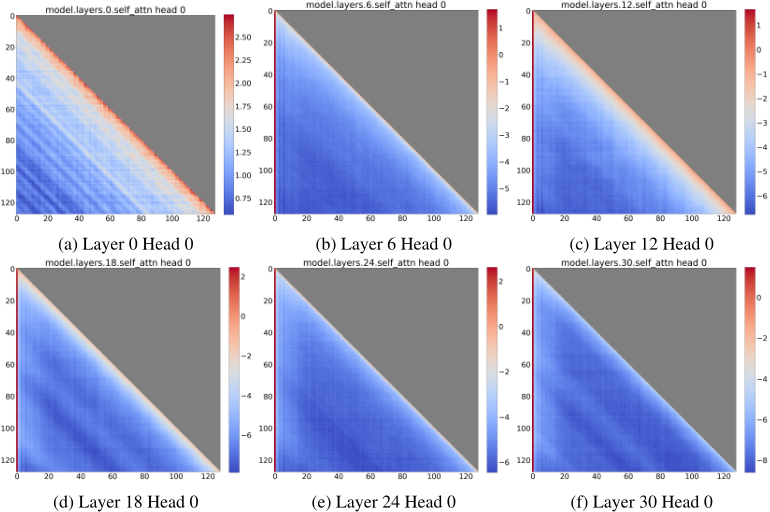
17
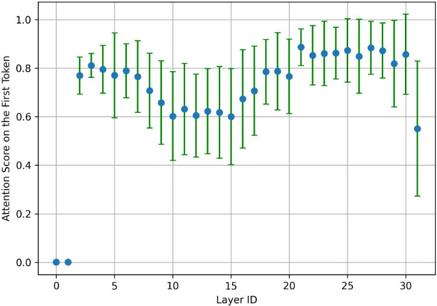
为清晰起见，图 2 使用短序列（长度为 16）可视化了 Llama-2-7B 的注意力图。我们在图 11 中进一步可视化了 Llama-2-7B 在更长序列（长度为 128）上的注意力。我们发现，在短序列上得到的观察结果在更长序列上同样成立：在大多数层中，初始 token 的注意力得分远高于序列中其余 token，而无论初始 token 与序列其余部分中的 token 之间相距多远。这是因为序列越长，注意力汇聚（attention sink）的得分在热力图上呈现得越细。我们在第 F 节中使用另一种方法进一步分析了更长序列（长度为 4096）上的注意力分布。
F QUATITATIVE ANALYSIS OF ATTENTION SINKS IN LONG INPUTS
图 2 和图 13 为清晰起见，使用短序列展示了注意力汇聚（attention sink）现象。在此基础上进一步扩展分析，图 12 展示了长输入（序列长度为 4096）中注意力得分（经 SoftMax 之后）向第一个 token 分配的分布情况。我们在 256 个序列上对注意力得分取平均，每个序列包含 4096 个 token。图中绘制的数据表示每一层中第 4096 个 token 分配给初始 token 的注意力。值得注意的是，除最底部的两层外，第一个 token 的注意力得分显著偏高，往往超过总注意力的一半。这一观察从实证上证实了大多数层和注意力头会优先关注第一个 token，而与序列中其他 token 与其相距多远无关。这一趋势凸显了序列中初始 token 的关键作用：由于 SoftMax 函数分母中的很大一部分随之被移除，删除这些 token 会对语言模型性能产生巨大影响。
G LLAMA-2-70B ATTENTION VISUALIZATION
图 2 展示了 Llama-2-7B 的注意力可视化，我们在图 13 中进一步可视化了 Llama-2-70B 的注意力。我们发现针对 Llama-2-7B 的观察在 Llama-2-70B 上同样成立：在大多数层中，初始 token 的注意力得分远高于其余 token。
18
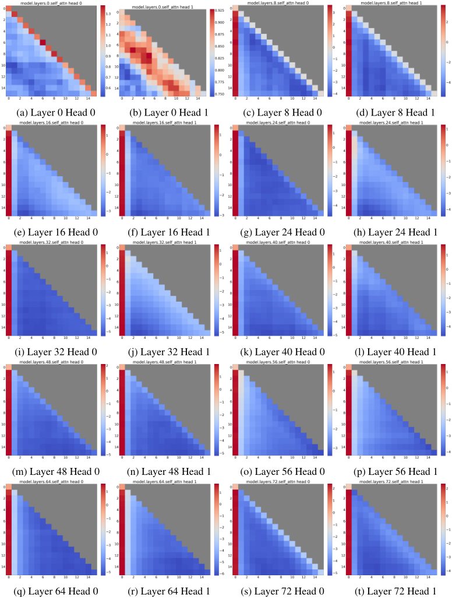
H ATTENTION SINKS IN ENCODER TRANSFORMERS
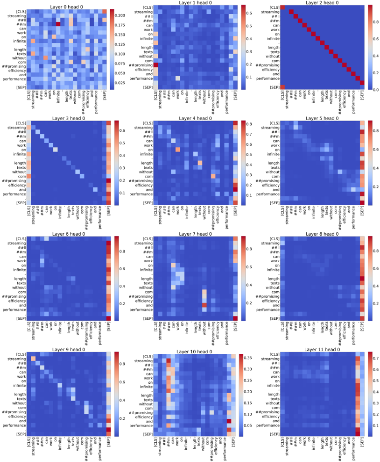
本文主要探讨了在 GPT、Llama 等自回归的仅解码器（decoder-only）语言模型中观察到的注意力汇聚（attention sink）现象。基于 3.1 节的洞察，我们提出该现象很可能同样存在于其他 Transformer 架构中，包括 BERT (Devlin et al., 2019) 和 ViT (Dosovitskiy et al., 2021) 等编码器模型。这一假设源于这样一个事实：这些模型具有相似的 Transformer 结构，并且都使用 SoftMax 注意力机制。为证实我们的假设，我们分析了 BERT-base-uncased 的注意力模式，如图 14 所示。我们发现 BERT-base-uncased 同样表现出注意力汇聚现象，其特征是在大多数层中，[SEP] token 被分配了不成比例的高注意力得分。这表明该模型始终依赖无处不在的 [SEP] token 作为注意力的焦点。此外，Darcet 等人的同期研究在视觉 Transformer（Vision Transformers）中识别出类似的注意力尖峰，并将其归因于充当全局图像信息“寄存器”（registers）的随机背景 patch token。我们认为这些“寄存器”与我们观察到的注意力汇聚现象类似，这表明该现象是所有 Transformer 模型的一个普遍特征。
| Cache Config | 0+1024 | 1+1023 | 2+1022 | 4+1020 |
|---|---|---|---|---|
| Vanilla | 27.87 | 18.49 | 18.05 | 18.05 |
| + 1 Sink Token | 1235 | 18.01 | 18.01 | 18.02 |
| + 2 Sink Tokens | 1262 | 25.73 | 18.05 | 18.05 |
| Cache Config | 0+1024 | 1+1023 | 2+1022 | 4+1020 |
I USING MORE SINK TOKENS IN THE PRE-TRAINING STAGE
第 3.3 节已经说明，在预训练阶段引入单个专用汇聚 token（sink token）不会影响模型性能，但能够通过将注意力汇聚集中到单个 token 上来提升流式性能。本节深入探讨在预训练期间添加更多汇聚 token 能否进一步优化预训练语言模型的性能。
如图 15 所示，我们的实验表明，在预训练期间引入一个或两个汇聚 token，所得到的预训练损失曲线与基线（vanilla）模型十分接近。然而，如表 9 所详述，引入第二个汇聚 token 并未在大多数基准测试任务上带来实质性的性能提升。
如表 10 所示的进一步分析表明，添加额外的汇聚 token 并不能提升流式性能。有趣的是，模型似乎需要同时依赖这两个汇聚 token 才能维持稳定的流式性能。这些发现表明，虽然单个汇聚 token 足以改善流式性能，但添加更多汇聚 token 并不会使整体语言模型性能获得进一步提升。这与视觉 Transformer（ViT）中的发现（Darcet et al., 2023）形成对比，在后者中，多个“寄存器”（registers）被证明是有益的。
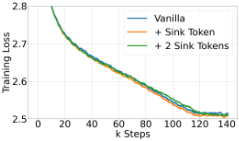
| Methods | ARC-c | ARC-e | HS | LBD | OBQA | PIQA | WG |
|---|---|---|---|---|---|---|---|
| Vanilla | 18.6 | 45.2 | 29.4 | 39.6 | 16 | 62.2 | 50.1 |
| + 1 Sink Token | 19.6 | 45.6 | 29.8 | 39.9 | 16.6 | 62.6 | 50.8 |
| + 2 Sink Tokens | 18.7 | 45.6 | 29.6 | 37.5 | 15.8 | 64.3 | 50.4 |
| Methods | ARC-c | ARC-e | HS | LBD | OBQA | PIQA | WG |